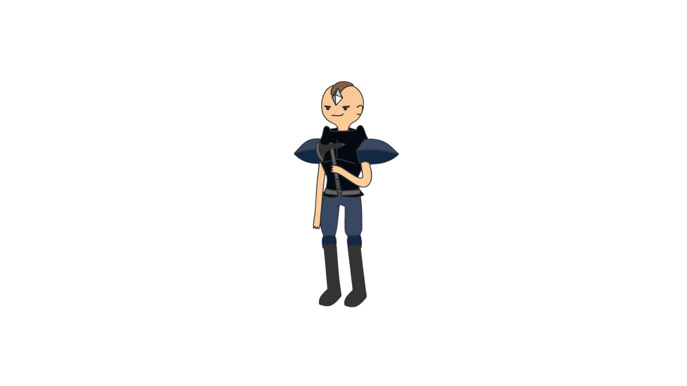
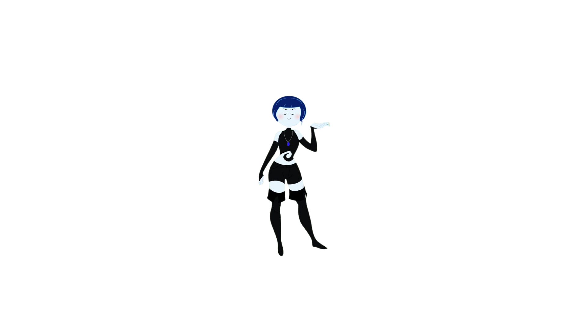
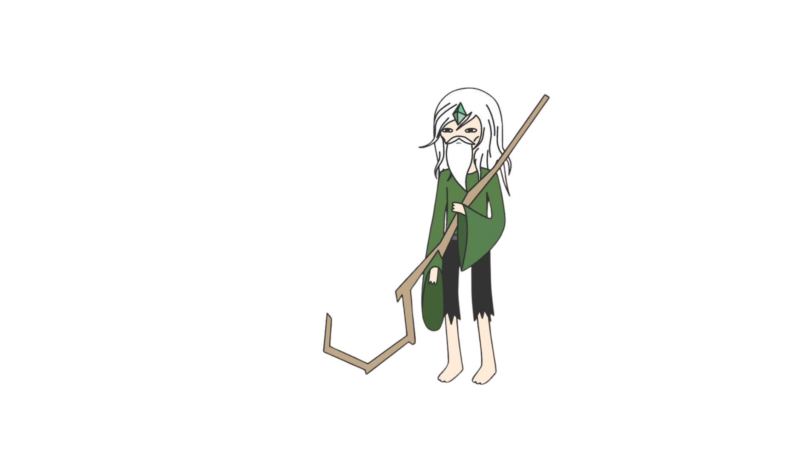
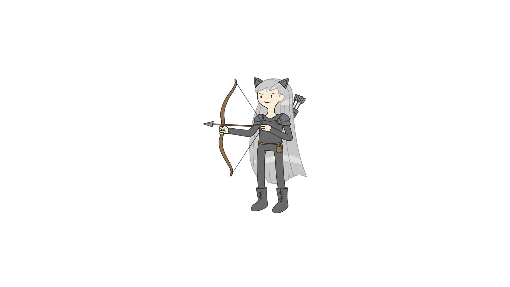
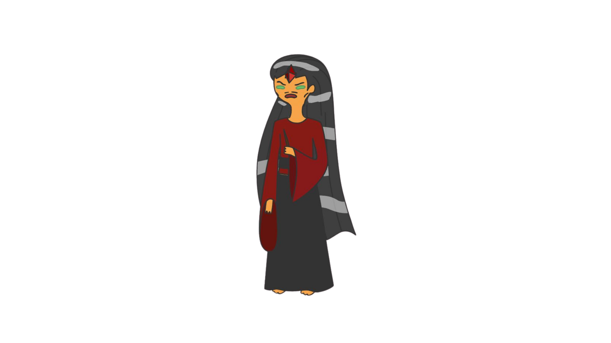

In the Land of Ooo, Princess Bubblegum has been kidnapped. No one knows who took her or where she was taken. Amid the panic in the Candy Kingdom, a group of characters unite to uncover her whereabouts, armed with only one clue: whoever abducted her also stole a powerful artifact—the book known as the "Enchiridion." In the wrong hands, this tome could jeopardize the entire multiverse.
The Enchiridion is a legendary book within the Adventure Time universe, initially introduced as a guide for heroes. However, it possesses profound magical properties. When specific gems are inserted into designated slots within the book, it can open portals to various dimensions of the multiverse. This capability makes it an object of immense power and danger if misused.
Given the Enchiridion's potential to access and possibly disrupt the multiverse, its theft alongside Princess Bubblegum's abduction raises significant concerns. The group seeking to rescue her must not only find the princess but also prevent the misuse of the Enchiridion to safeguard the balance of the multiverse.
This character serves as the group's shield, always at the forefront to protect his companions. His Taunt ability is crucial for keeping enemies focused on him, allowing allies to attack safely. Though he lacks magical abilities, his strength and defense make him a formidable adversary.
Kaela speaks only when necessary. She is cold, patient, and highly disciplined. Every move is calculated, every strike deliberate. She has no room for mercy — only efficiency. Her past is cloaked in rumors: some say she was raised by an elite assassin order; others claim she betrayed her mentors to carve her own path. She is not driven by vengeance or gold — but by the thrill of absolute control over life and death.
Merlírio is serene and gentle, with a heart as vast as the forest. Often lost in the subtle rhythms of nature, he may appear distracted — listening to the rustle of leaves, the hum of insects, or the distant call of birds — but his awareness runs deep. He speaks with plants, follows the guidance of the stars, and places great trust in the wisdom of the wind. In the chaos of battle, Merlírio might stop to mend a wounded squirrel, even as explosions erupt around him. He believes that all life, no matter how small, is sacred and worth saving.
Áster exists beyond human norms. Entirely disconnected from social constructs, they show no understanding of ethics, customs, or even basic interaction. There is no malice in their actions — only instinct and precision. They do not speak unless absolutely necessary, and when they do, it is usually in brief, strange observations disconnected from context. Though they may appear cold or emotionless, Áster is not cruel — they simply lack the frame of reference for morality. There is a haunting innocence to them, like a spirit mimicking a body. People fear Áster not for who they are, but because they are a mirror that reflects nothing back.
Dussekar is impulsive, passionate, and brimming with raw energy. He’s a doer, not a thinker — the kind who lights the fuse and figures out the rest later. He lives intensely: when he loves, he burns bright; when he’s angry, he’s a wildfire. Hot-headed but loyal, he never backs down from a fight — especially when it’s for something he believes in. His fiery magic mirrors his nature: explosive, wild, and impossible to ignore.
